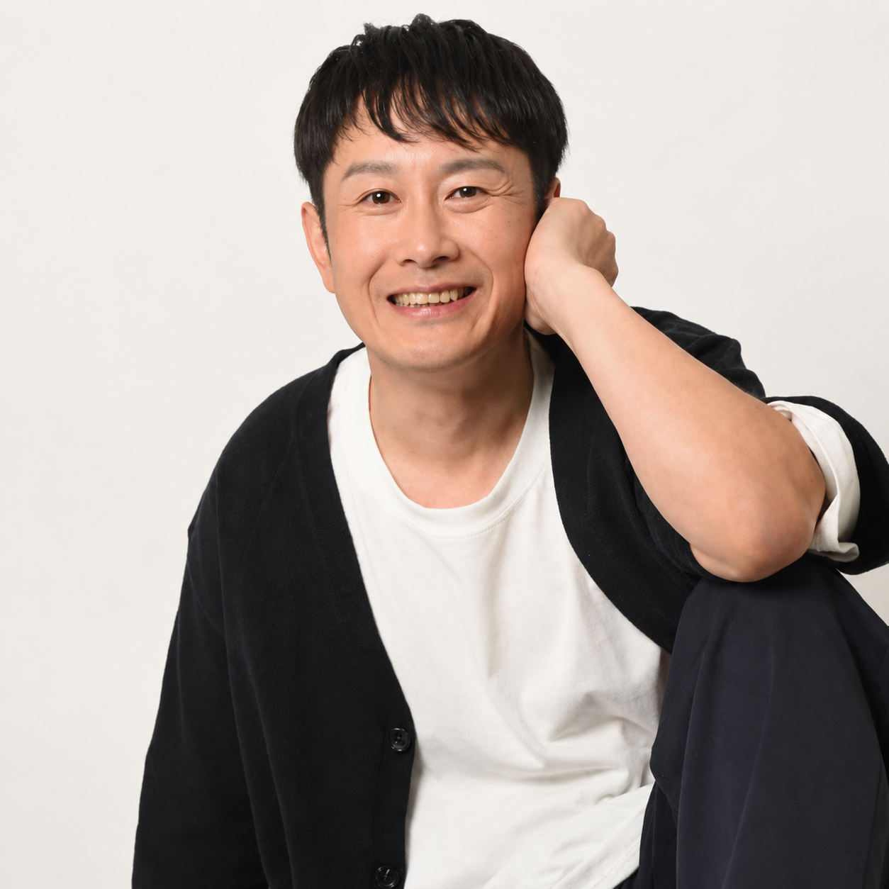

栗原 直行
教師として日々子どもたちと向き合いながら、音楽活動を続けるアーティスト。
千葉・東京を拠点に、遠方のイベントにも出演するなど精力的に活動している。
学生時代より音楽制作やライブ活動を行い、教師になった後も継続的に活動を重ねる。2023年10月2日、自身初の配信曲「FREEDOM!」をリリース。その後も配信リリースやライブ出演を重ね、2026年2月23日には、それまでに発表してきた配信シングルを収録したアルバム「1年栗組〜青春謳歌No.1〜」を配信リリースした。
日常の中にある思いや、まっすぐな感情を音楽として届けることを大切にしている。教育の現場で培ってきたまなざしと、生活の中から生まれる言葉をもとに、聴く人の背中をそっと押すような音楽を目指して活動している。
